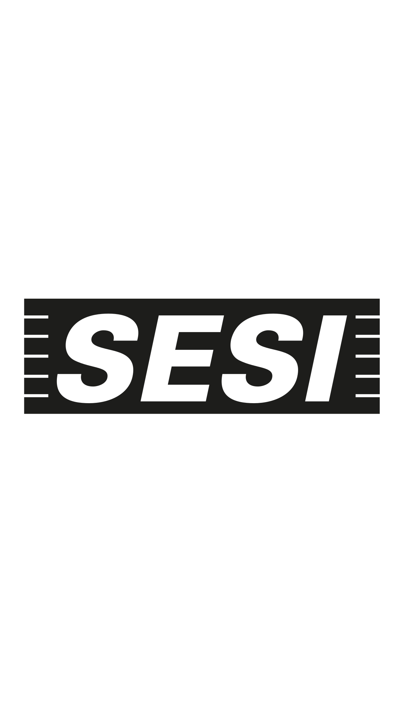
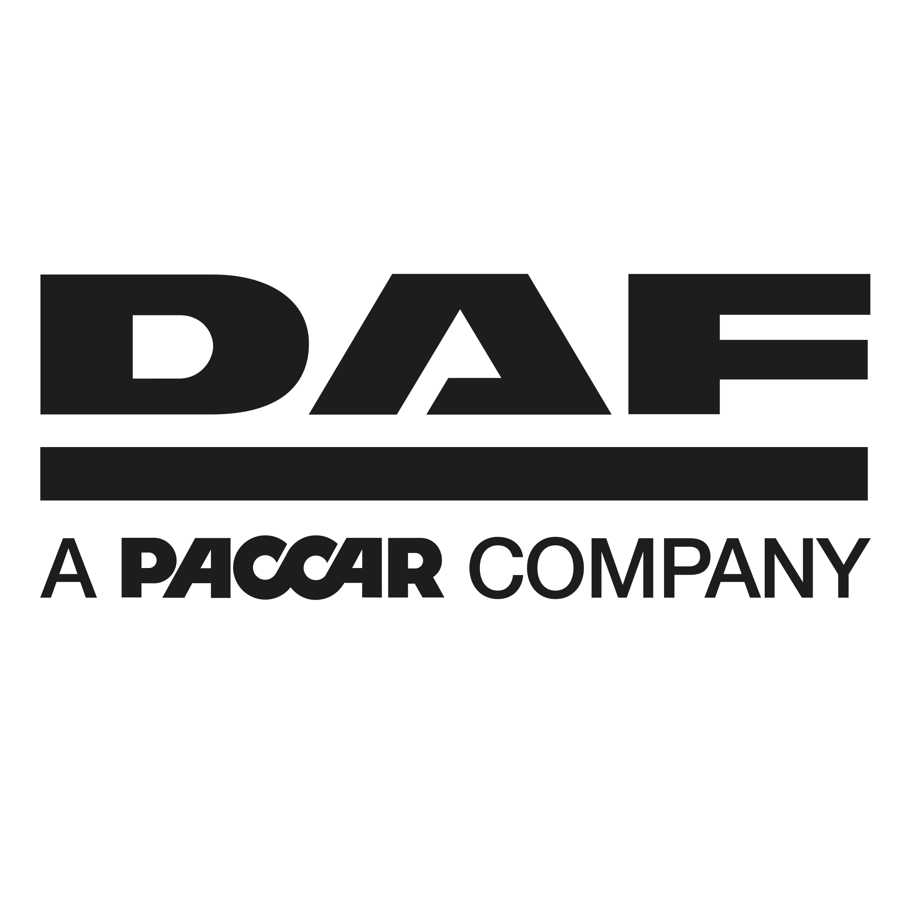
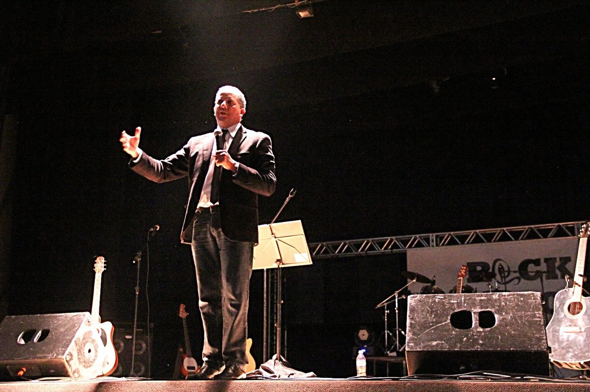
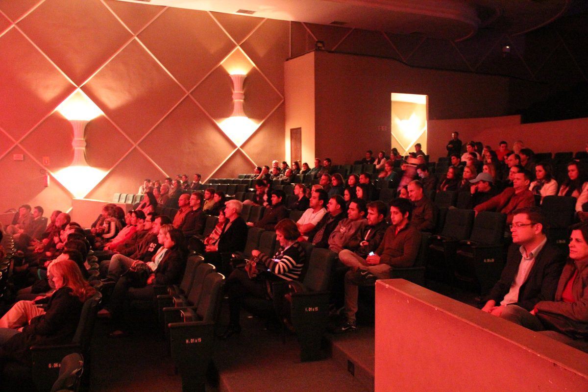
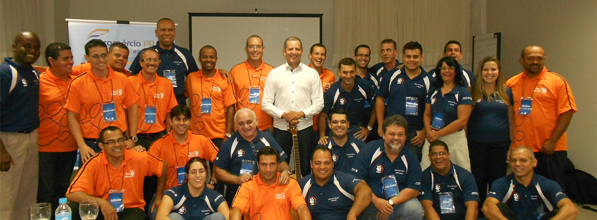
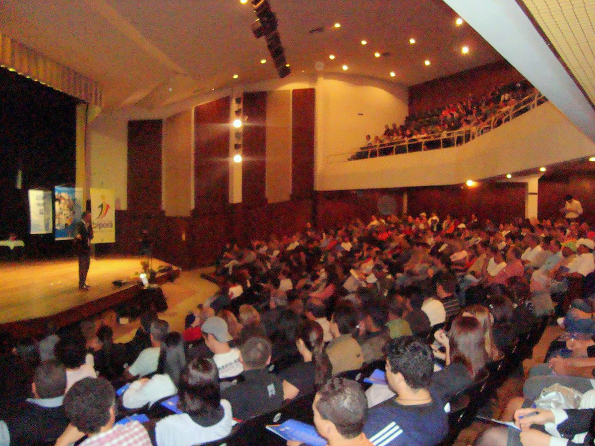

01
Palestras corporativas
Para SIPATs, convenções, semanas internas, encontros empresariais e momentos de mobilização.
Ver temasAdriano Silva conduz palestras, treinamentos e experiências corporativas que unem desenvolvimento humano e linguagem musical para transformar atendimento, comunicação e liderança.
o manifesto
Empresas não precisam de outro encontro esquecido na segunda-feira seguinte. Precisam de momentos que conectem pessoas, deem linguagem para temas difíceis e sustentem energia depois que as luzes se apagam.

para quem é
o que muda
A maioria das dores corporativas começa antes do processo — começa em como as pessoas se comunicam, se reconhecem e se movem juntas.
soluções
Para SIPATs, convenções, semanas internas, encontros empresariais e momentos de mobilização.
Ver temasProgramas estruturados para comunicação, liderança, atendimento, vendas, motivação, oratória e gestão do tempo.
Montar sob medidaProjeto voltado a instituições de saúde que desejam construir uma cultura mais empática, segura e acolhedora no atendimento.
Conhecer assessoriaShows, palestras musicais e encontros que unem arte, reflexão e interação para conexão emocional com o público.
Levar música ao eventoDesde 2010, Adriano integra música às suas apresentações para tornar o aprendizado mais leve, participativo e memorável. A música funciona como ponte entre conteúdo e emoção — o público presta atenção, se envolve, e guarda melhor a mensagem.

quem é Adriano
Administrador, MBA em Administração Estratégica e Gestão da Qualidade. Palestrante, professor, instrutor, consultor e músico. Iniciou sua trajetória como consultor no SEBRAE em 1993 e, desde 1998, atua em capacitação para empresas, instituições e equipes.
Foi supervisor de vendas em multinacional, gerente de marketing e professor em cursos de extensão e pós-graduação. Em 2010, integrou música às suas apresentações — uma forma mais envolvente de transmitir conhecimento.
autoridade





assessoria · saúde
A qualidade do atendimento em saúde não depende apenas de estrutura, tecnologia ou processos. Depende, sobretudo, da forma como profissionais, pacientes e familiares se relacionam.
Conhecer a assessoriadepoimentos
"Expectativas superadas. Temas pertinentes, abordados de forma criativa e dinâmica. Foi um sucesso.
Everton Jr Batista Caminhos do Paraná
"Os melhores treinamentos que já participei. Muito dinamismo e conhecimento espetacular em gestão.
Luiz Gustavo Barreto Gestor corporativo
"Se você quer contratar uma palestra, show, treinamento ou consultoria, Adriano Silva é o cara certo.
Marcos Vinicius Horst Rinaldi Parceiro de 10 anos
"Competente, responsável e sempre pronto a atender as necessidades dos clientes.
Silvia Gibala Cliente corporativa
momentos







perguntas frequentes
Se a sua dúvida não estiver aqui, é só chamar pelo WhatsApp — geralmente respondemos no mesmo dia.
Sim. As palestras e treinamentos são oferecidos nos dois formatos. Para experiências com música, o presencial entrega energia mais alta — vale a conversa.
Sempre. Cada apresentação é adaptada ao público, ao contexto e ao objetivo do evento — isso é parte do método.
Atendimento, liderança, comunicação, motivação, vendas, oratória, humanização em saúde, criatividade, gestão do tempo, empregabilidade e outros temas sob demanda.
Geralmente entre 60 e 90 minutos. Treinamentos têm carga horária estruturada (8h a 20h) ou modular conforme a necessidade.
Som de qualidade e um espaço minimamente preparado. Conversamos sobre rider técnico no orçamento.
Via WhatsApp ou e-mail. Conte data, cidade, público e objetivo do evento — você recebe uma proposta sob medida.
Conte o objetivo do evento ou treinamento e receba uma proposta alinhada ao público, ao tema e ao momento da sua organização.